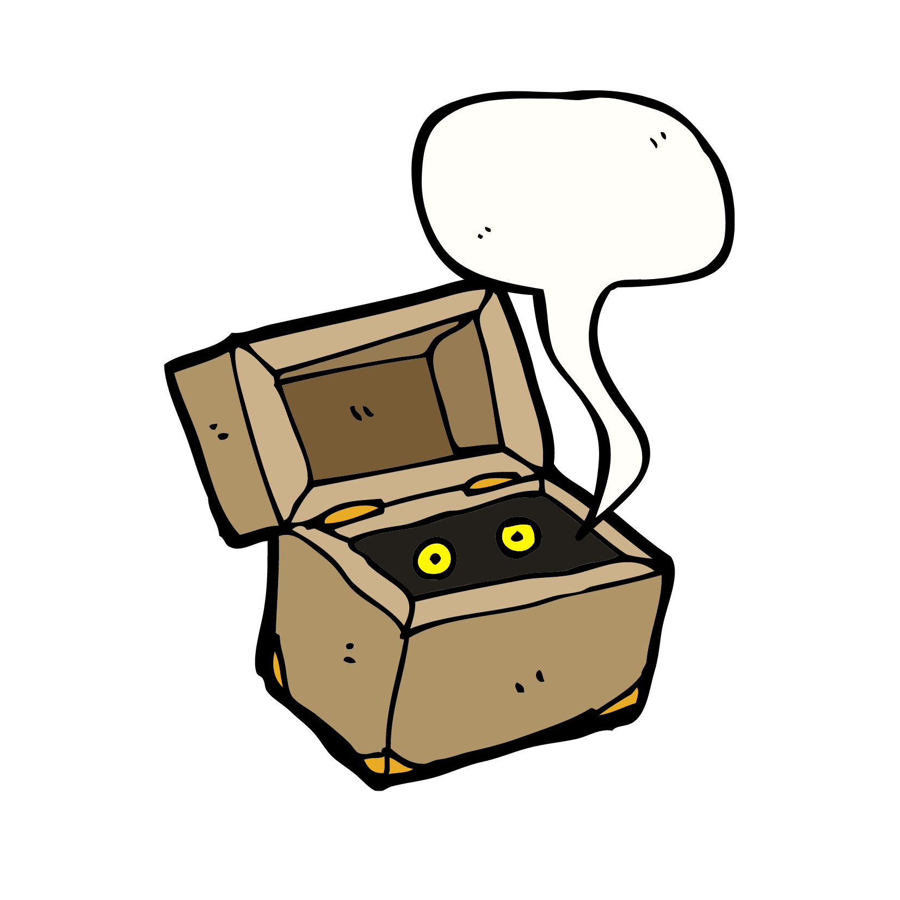

Тестирование является неотъемлемой частью процесса разработки программного обеспечения. Рассматривая еще одно определение из множества, можно сказать, что тестирование — это одна из техник контроля качества, включающая в себя активности по планированию работ (Test Management), проектированию тестов (Test Design), выполнению тестирования (Test Execution) и анализу полученных результатов (Test Analysis).
Тестирование программного обеспечения (Software Testing) — проверка соответствия между реальным и ожидаемым поведением программы, осуществляемая на конечном наборе тестов, выбранном определенным образом.
Все подходы к тестированию можно структурировать по общим признакам:
• по стадии разработки ПО;
• знанию устройства тестируемой системы;
• по направленности тестового сценария
и так далее.
Стадии тестирования
Начнем с самого верхнего уровня — это стадии тестирования, они соответствуют стадиям разработки программного обеспечения. Принято выделять:
• Альфа-тестирование можно понимать, как исследование программы, в которой реализован базовый функционал. Обычно проводится силами специалистов команды разработчиков;
• Бета-тестирование предполагает всестороннее исследование продукта с целью выявления наибольшего числа ошибок и их последующего устранения. На бета-тестирование могут привлекаться сторонние разработчики и пользователи.
Этап бета-тестирования может повторяться после исправления найденных ошибок и багов.
Интересный факт:
Компании, занимающиеся разработкой видео-игр практикуют привлечение своих пользователей уже на этапе альфа-тестирования. Это напрямую связано со спецификой программирования таких игр — несмотря на широкий арсенал используемых в игре элементов, проверить ее на «играбельность» возможно и при минимальном наборе таких предметов, как оружия, персонажей и так далее.
По знанию устройства тестируемой системы можно выделить:

• «Чёрный ящик»;
• «Серый ящик»;
• «Белый ящик».
В данной концепции принято воспринимать тестируемую систему как абстрактный ящик. «Черный ящик» предполагает, что при тестировании мы не имеем представления о том, как устроена сама система. Вывод об успешности тестирования делается на основе сравнения соответствия выходных данных ожидаемым.
Тестирование по стратегии «белого ящика» (называемой иногда стратегией «стеклянного ящика») предполагает полное исследование системы с учетом ее внутреннего устройства.
Соответственно тестирование методом «серого ящика» применяется, когда известны лишь некоторые детали реализации исследуемой системы.
По направленности тестового сценария принято выделять тестирование позитивных и негативных сценариев.
На начальном этапе разработки программного обеспечения основной акцент делается на проверку позитивных сценариев — оценку работоспособности системы в рамках утвержденных бизнес-требований. В дальнейшем осуществляется тестирование негативных сценариев в нестандартных условиях применения, которые потенциально могут возникнуть в процессе эксплуатации.
По степени автоматизации можно выделить ручное (manual testing) и автоматизированное (test automation) тестирование. Ручное тестирование осуществляется тестировщиком или разработчиком без использования каких либо программных средств. Данный подход к тестированию является очень трудоемким и малоэффективным. Для решения данной проблемы осуществляется автоматизация тестирования — тесты выполняются с помощью программных средств.
Мы с вами остановимся на автоматизированном тестировании, которое рассмотрим подробнее в следующем разделе.